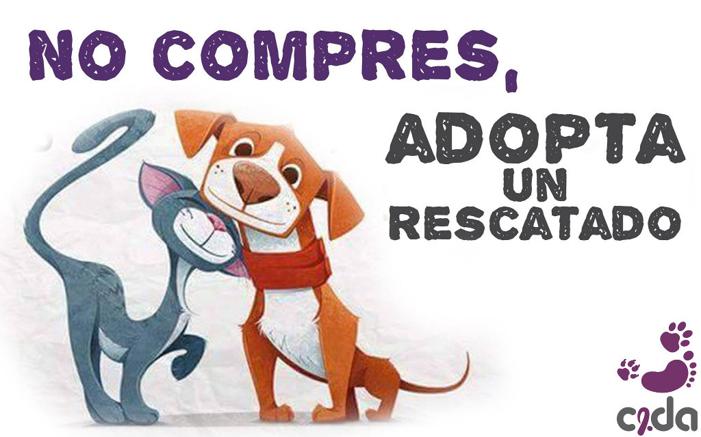

Adopta¶
ADOPTAR en lugar de comprar animales, es uno de los caminos para terminar con la sobrepoblación de animales callejeros.
Sigue nuestras adopciones en Facebook
Uno de los objetivos de CeDA es encontrar hogares definitivos para aquellos animales que rescatamos de las calles, asegurándoles una nueva oportunidad de vida, con familias responsables que asuman el compromiso de velar por su bienestar. Para ello CeDA verifica que el interesado es apto para cuidar a un animal.

{kind=link}
El trabajo en adopción permite que perros y gatos callejeros encuentren familias que les brinden amor y protección, una vez finalizado su proceso de recuperación.
Aquí algunas de las principales razones para adoptar:
- ADOPTAR ES GRATIS, no te cuesta, sólo tienes que cubrir las necesidades básicas de tu animal.
- Todos los perros y gatos son esterilizados: De forma que si un día se te escapa o se pierde no colabore con los cientos de perros y gatos callejeros que ya existen en las ciudades. CeDA te entrega un animal esterilizado o establece contigo un compromiso de hacerlo a la edad adecuada del perro o gato.
- No importa cómo es o de dónde venga. Si lo que quieres es un amigo incondicional y un compañero, en realidad ¿importa que sea raza o que ya no sea cachorro? Un animal adoptado será tu mejor amigo y compañero fiel, y seguramente se convertirá en el mejor amigo de tu familia y un ser absolutamente agradecido.
PERO Adoptar es un compromiso de por vida, si decides adoptar recuerda que debes tener las condiciones mínimas necesarias para que el perro o gato que incluyas en tu hogar tenga cubiertas sus necesidades básicas, además de que tengas aunque sea un espacio físico pequeño para protegerlo y firmar con un contrato de adopción donde estará reflejado tu compromiso con esterilizar el animalito.